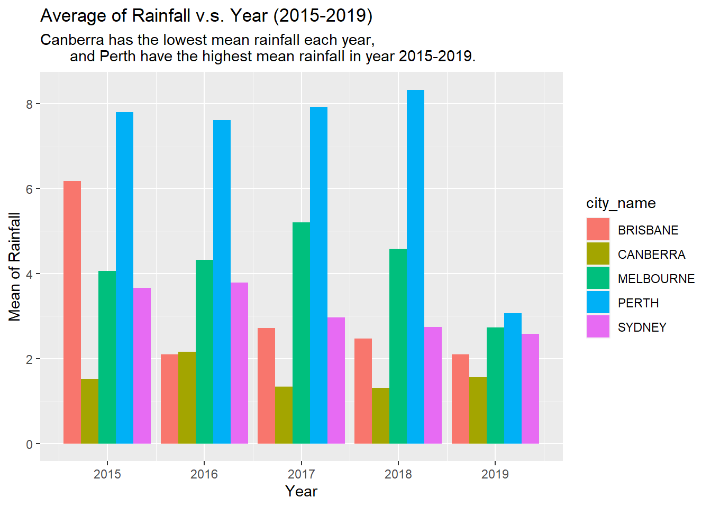
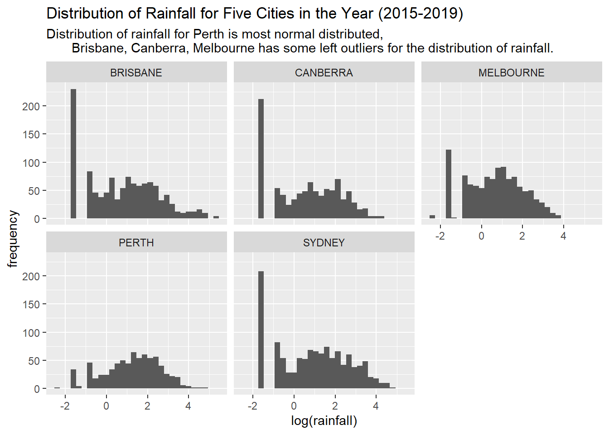
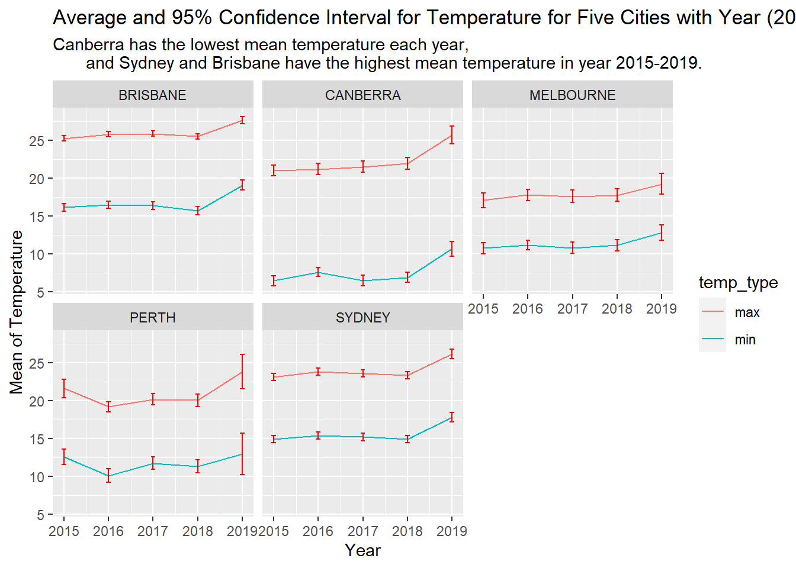
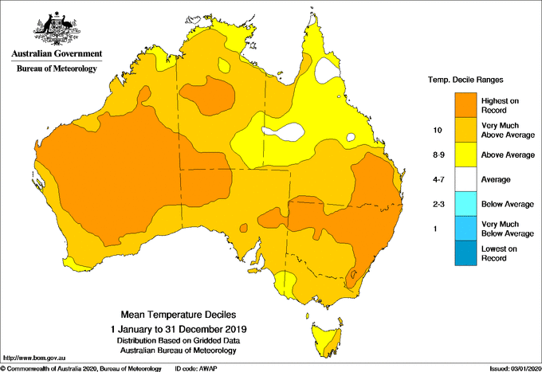
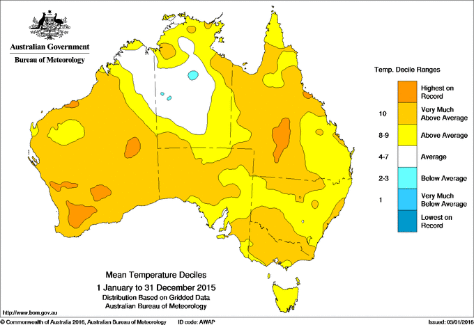

Example Analysis
library(tidyverse)
library(stringr)
library(tidyr)
library(lubridate)Background
Question: We want to see the the relationship for fires with temperature and rainfall for five cities (Brisbane, Canberra, Melbourne, Perth, Sydney) in recent years.
Audience: People who care about the fires in Australia, maybe residences.
Data: The data shows the temperature and rainfall data, which collected from the Australian Bureau of Meteorology of some weather stations(Mock 2022).
The data dictionary for the data is : https://github.com/rfordatascience/tidytuesday/blob/master/data/2020/2020-01-07/readme.md#data-dictionary
Part 1: Wrangling data
# wrangling data
rainfall %>%
drop_na() %>%
unite(date,c(year,month,day)) %>%
mutate(date = ymd(date)) %>%
mutate(year = as.integer(substr(date,1,4))) %>%
mutate(city_name = str_to_upper(city_name)) %>%
inner_join(temperature, id = c("city_name","date")) %>%
filter(year >= 2015) -> dfknitr::kable(
head(df[1:4,c(2:4,10:12)])
)| city_name | date | rainfall | year | temperature | temp_type |
|---|---|---|---|---|---|
| PERTH | 2015-01-29 | 0.6 | 2015 | 37.8 | max |
| PERTH | 2015-01-29 | 0.6 | 2015 | 22.0 | min |
| PERTH | 2015-01-30 | 2.2 | 2015 | 35.0 | max |
| PERTH | 2015-01-30 | 2.2 | 2015 | 21.6 | min |
In order to see the the recent situation in Australia, w only consider four years, which from 2015 to 2019, to show the most recent rainfall and temperature data.
Part2: Data Visualization
Show the Rainfall For different Cities
# bar plot year vs mean rainfall
df %>%
group_by(city_name, year) %>%
summarise(mean_rainfall = mean(rainfall)) %>%
ggplot(aes(fill=city_name, y=mean_rainfall, x=year)) +
geom_bar(position="dodge", stat="identity") +
labs(title = "Average of Rainfall v.s. Year (2015-2019)",
subtitle = "Canberra has the lowest mean rainfall each year,
and Perth have the highest mean rainfall in year 2015-2019.",
x = "Year",
y = "Mean of Rainfall")
We also would like to see some distribution of rainfall for cities
df %>%
ggplot(aes(x= log(rainfall))) +
geom_histogram() +
facet_wrap(~city_name)+
labs(title = "Distribution of Rainfall for Five Cities in the Year (2015-2019)",
subtitle = "Distribution of rainfall for Perth is most normal distributed,
Brisbane, Canberra, Melbourne has some left outliers for the distribution of rainfall.",
x = "log(rainfall)",
y = "frequency")
We analyze the log transformation for rainfall, since the distribution of rainfall is left skewed.
Show the Temperature For different Cities
calculate_CI <- function(x, conf = 0.95) {
degrees_freedom = length(x)-1
alpha = 1 - conf
t_score = qt(p=alpha/2, df=degrees_freedom, lower.tail=FALSE)
lower_bound = mean(x,na.rm = T) - t_score*(sd(x,na.rm = T)/sqrt(length(x)))
upper_bound = mean(x,na.rm = T) + t_score*(sd(x,na.rm = T)/sqrt(length(x)))
return(c("lower_bound" = lower_bound,
"upper_bound" = upper_bound))
}
# line plot year vs mean temp
df %>%
group_by(city_name, year, temp_type) %>%
summarise(mean_temp = mean(temperature,na.rm = T),
lower_bound = calculate_CI(temperature)[1],
upper_bound = calculate_CI(temperature)[2]) %>%
ggplot(aes(x = year,y= mean_temp, color = temp_type)) +
geom_line()+
geom_errorbar(aes(ymin = lower_bound, ymax = upper_bound), width = 0.1, color = "red") +
facet_wrap(~city_name)+
labs(title = "Average and 95% Confidence Interval for Temperature for Five Cities with Year (2015-2019)",
subtitle = "Canberra has the lowest mean temperature each year,
and Sydney and Brisbane have the highest mean temperature in year 2015-2019.",
x = "Year",
y = "Mean of Temperature")
The 2015 and 2019 mean temperature in Australia shows below:
 (Meteorology 2020)
 (Meteorology 2016)
Conclusion
From the analysis above, we can noticed that the temperature is increasing through 2015 to 2019, and there is a strictly increase in 2019. Both Brisbane and Sydney have the highest temperature in recent years, and the rainfall is less in this two areas also. For the fewest rainfall of five cities is Canberra, and the temperature in this city is also very high. By the news in the Internet(BBC 2020), we can see that there are lots of fire detection or hot-spots in these areas. Therefore, the fire is associated with temperature and rainfall. Although, Melbourne has the lowest temperature and Perth has the most rainfall in these five cities, there are still some fire detection.
Appendix
dplyr:
- mutate(), inner_join(), filter(), group_by(), summarise()
tidyr:
- drop_na(), unite()
ggplot2:
- geom_bar(), geom_histogram(), geom_line(), geom_errorbar(), facet_wrap(), labs()